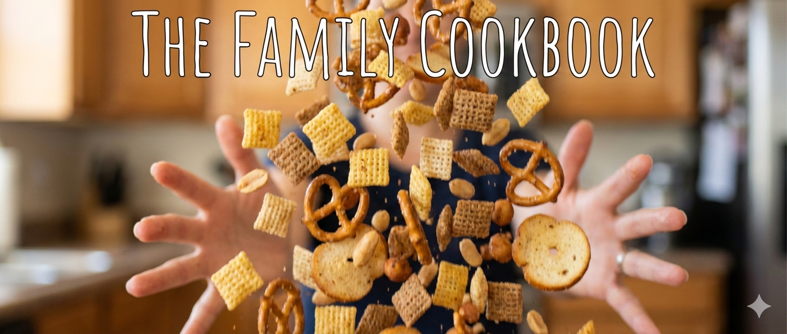

Family Recipe Collection
Treasured recipes passed down through generations
All Recipes
Print Cookbook
Loading recipes...
Full Recipe Index
×
Recipe Name
Category
Adjust servings:
½×
1×
2×
3×
Ingredients
(tap to check off)
Instructions
(tap to check off)
Notes
Original Recipe Card
☀️ Screen staying on
Original Recipe Card
×